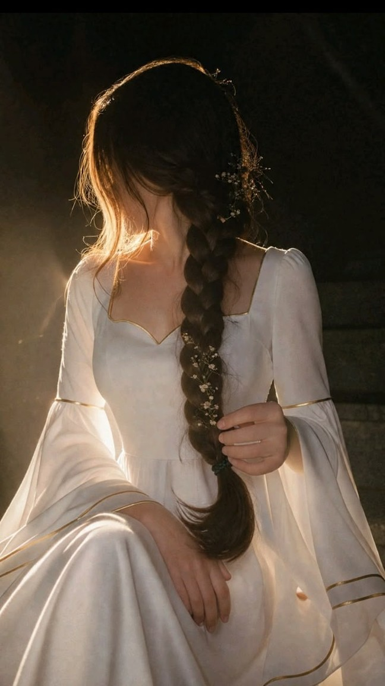

The /computer-use skill for Google Antigravity
2,553 mouse strokes. No hands.
Your agent sees the screen and works real Windows and macOS apps with your mouse and keyboard. You can stop it the moment you want to.
Portrait, 2026. Microsoft Paint. Painted by Gemini 4 Hydrogen in Antigravity, following a stroke plan scripted from the photo. Replayed here from that plan, about 280× faster.
Every stroke was a real drag.
The finished painting from that run, next to the photo it came from. Drag across it to compare.


01 — Read
It reads the app first.
Every button and field has a role and a name. It reads those before it looks at pixels, so it clicks the right thing.
02 — Act
Then it uses it. For real.
Your mouse, your keyboard, only in the apps you approve.
03 — Stop
Esc stops it at once.
Wherever you are. It lets go of every key and button, and the next task starts fresh.
Try it now: press Esc
Ready when you are.
Free and open source, for Windows and macOS.
Ask your agent
Paste this into Antigravity and approve the command it shows you.
Install the computer use skill from https://github.com/shayann07/antigravity-computer-use with the one-line installer for this computer. Show me the command before you run it.
Or run one line
It checks the release's SHA-256 before installing anything.
irm https://raw.githubusercontent.com/shayann07/antigravity-computer-use/main/install.ps1 | iex
In PowerShell.
curl -fsSL https://raw.githubusercontent.com/shayann07/antigravity-computer-use/main/install.sh | sh
In Terminal, then grant Accessibility and Screen Recording when asked.
Then open a new Antigravity conversation and type /computer-use. Prefer to check the SHA-256 yourself? Install by hand.